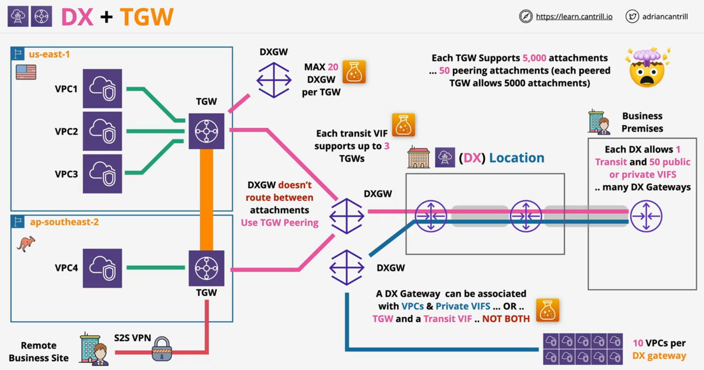

Direct Connect
DX Concepts
- A physical connection (1, 10 or 100 Gbps)
- Business Permises => DX Location => AWS Region
-
Port Allocation at a DX Location
- hourly cost
- outbound data transfer
-
Provisioning time - AWS take time to allocate the port
-
Once the port is allocated, customer will need to arrange connection into the port
- could take weeks or months to seting up connection intially - like physically laying the cables bettween business permises and DX Location
- physical cable does not provide resilience
-
DX provides low & consitent latency + high speeds
-
Can access AWS Private Services (VPCs) and AWS Public Services - NO INTERNET
-
Within the DX location, a Cross Connect is established between AWS DX Router and Customer DX Router.
- AWS DX Rotuer and Customer DX Router resides in AWS Direct Connect Cage and Customer/Comms Cage respectively.
- Configure Virtual Interfaces over physical cables - VIFs

DX Physical Connection Architecture
- DX Connection = Physical Port (1, 10, 100 Gbps)
-
Can only use Single-mode fibre and NO copper
Speed Transceiver 1Gbps 1000BBASE-LX (1310 nm) Transceiver 10Gbps 10GBBASE-LR (1310 nm) Transceiver 100Gbps 100GBASE-LR4 -
Auto-negotiation shoule be DISABLED
- configure port speed and full-duplex manually set
-
Ensure the router in DX location supports BGP and BGP MD5 Authentication
- optional: MACsec and Bidirectional Forwarding Detection (BFD)
VPC endpoints cannot be accesed through Private VIP (don't need them) - accessible through public VIP
DX Security (MACSec)
MAC Security (MACsec) is an IEEE standard that provides data confidentiality, data integrity, and data origin authenticity.
- Frame encryption - layer 2 - IEE 802.1AE-201188
- Hop by Hop encryption between two switches/routers (adjacency)
- Confidentaility - strong encryption
- Data Integrity - data cannot be modified in transit
- Data oriign authenticity
- Replay Protection
- Does not replace IPSec over DX - not end-2-end
- Designed to allow for super high spped .. terabit networks
MACSec - 101
- Each MACSec participant creates secure channel - unidirectional (1 IN an 1 OUT)
- Secure Channel Identifier (SCI)
-
Secure Associations - sessions on SC, generally 1 exists at a time
- series of transient sessions
- 1 exists at a time except when they are being replaced
-
MACsec encapsulation - 16 bytes MACsec tag & 16 bytes Integrity Check Value (ICV)
-
MACsec Key Agreement - discovery, authentication & key generation
- Cipher Suite - how data is encrypted .. packets per key, rotation ...
Get started with MACsec on dedicated connetions

DX Connection process
-
A DX connection begins in a DX location
- contains contains AWS equipment
- contains customer/provider equipment
-
DX location is not owned by AWS - renting
- Cages are rented by AWS and Customers
-
Only the DC staff can connect things together.
- when authorisation is provided by all the parties
-
LOA-CFA - Letter of Authorization and Connecting Facility Assignment
DX Virtual Interfaces
BGP Session + VLAN
Private and Public VIFs are based on VLANs and BGP sessions
- DX connections are a layer 2 connection - Data Link
- We need to connect to multiple layers of Layer 3(IP) networks (VPCs & public zone) over the DX connection
- Virtual Interfaces (VIFs) allow us to run multiple L3 networks over the layer 2 direct connect (DX)
-
Interfaces - BGP Peering Session + VLAN
- VLAN isolates different layer 3 network
- BGP exchanges routes & authenticates
-
Types of VIFS > for hosted connection, there can only 1 VIF
VIF Desc Limit (Dedicated) Public VIF Use to connect to public zone services which don't run withing VPC private+public =50 Private VIF Use to connect to private services within your VPC private+public = 50 Transit VIF Allow integration between TGW and DX 1 -
BGP is between the Customer DX router and AWS DX router
- can be extended to customer premises

Private VIF
-
Access 1 VPC resources using private IPs (workaround for multiple VPCs - TGW, DXG*)
- accessing resources like EC2 with public IPs won't work
-
Attach to VGWFs - 1* VPC only
- has to be in the same region as the DX location your connection terminates in
-
1 private VIF === 1 VGW === 1 VPC
- No encryption on private VIFs .. apps can layer on encyrption (e.g HTTPS)
- Can use MTU of 1500 and 9001 (Jumbo Frames) - ensure all the links in the communication chain supports it
- Using VGW = Route Propagation enabled by default!
- but will have to terminate the private VIF at the VGW
- VGW has AWS ASN - or you can configure one
- IPv4 or IPv6 (Seperate BGP pereing connetion)
- You configure YOUR ASN on the VIF.
- either public ASN or private ASN (64512 to 65535)
Creating Private VIF
- Pick the connection the VIF will run over
- Choose VGW (default) or Direct Connect Gateway*
- Interface Owner - this AWS account or another AWS account
- Choose a VLAN id - 802.1Q - needs to match customer config
- Requires BGP ASN of on-premises (public or private). If private, use 64512 to 65535
- choose peer IPs or auto-generated by AWS
- AWS will advertise the VPC CIDR and the BGP Peer IPs (/30's)
- you can advertise default or specific corp prefixes (max 100)
- beyond 100, the interface will go ideal and won't work
- Once the VIF is created, you can download the configuration file and configure the customer equipment

Public VIFs
Public VIFs provide access to AWS public zone services such as SQS, SNS, S3 as well as Public and Elastic IPs
- Access Public Zone services
- .. elastic IPs, public services (e.g SNS, SQS, S3 etc)
- No direct access to private (VPC) services
- Can access all public zone regions - accross AWS global network
- all regions
-
AWS advertise all AWS public IP ranges to you
-
.. you advertise any public IPs you own over BGP - have to work with AWS
-
.. bi-directional BGP communities - filter what routes you recieve based on geographic region
-
-
Advertised perfixes are not trasitive .. your prefixes don't leave AWS ( no other customers)
Creating Public VIFs
Easy to set up assuming there is already an operational DX connection
Public VIF + VPN
- Neither public or private VIFS offer any form of encryption
- Encrypted & Authenticated tunnel
- Running over DX (low latency & consistency latency)
- Uses a Public VIF + VGW/TGW public endpoints - consider what is it you trying to access
- VPN is transit agnostice - (DX/Public Internet)
-
VPN is end-2-end encryption (MACsec is single hop based)
- CGW <====> TGW/VGW
-
VPN has wider vendor support
- VPN has more CRYPTOGRAPHIC overhead (limits speeds) vs MACSec
- VPN can be used while DX is being provisioned and/or as a DX Backup

Direct Connect Gateway
DX Gateway can be used to extend private VIF functionality to allow connections to global VPCs (up to 500) from a single DX connection.
- Global newtwork device - accessible in all regions
- Associate private VIF to DX Gateway -- Private VIF => DX Gateway( any region)
- Associate with VGW's attached to VPCs globally in AWS
- Communication between VPCs and On-premises is allowed.
- Communication between VPC with other VPCs via DX Gateway is not allowed
- 1 Private VIF = 1 DX Gateway & 10 VGW per DX Gateway
- 1 DX can have 50 private VIFs == 50 DX Gateways == 500 VPCs
Cross-Account Direct Connect Gateway
DX Gateway, Transit VIFs and TGW
-
A DX Gateway can be associated with VPCs & Private VIFs .. OR .. TGW & Trasnit VIF ... NOT BOTH
-
1 Transit VIP/ DX
- 1 Transit VIP can supports upto 3 TGWs
- DXGW does not route between attachments - Use TGW peering
- TGW can connect to MAX of 20 DXGW
- Each TGW supports 5000 attachments


Direct Connect Resilience
-
Multiple points of failure in default setup of Direct Connect
-
Set up multiple routers in DX location (at least 2 of each AWS router and customer router) - some resiliency
- point of failure is still DX location and customer premise
-
Multiple (at least 2) DX locations with multiple (at least 2) customer premises - for better resiliency
-
Combine 2 and 3 for the maximum resiliency

Direct Connect Link Aggregation Groups
- NOT A RESILIENCY FEATURE
- Multiple physical connections act as one - speed multiplier
- Uses active/active architecture
- all members of the LAG are used at the same time
- 2 100Gb ports or maximum of 4 connections < 100Gb per LAG
- All connections need to be the same speed and terminate at the same DX location
- Attrbute
minimumLinksdetermine the active status of LAG. if the no. of connections goes below this number, the LAG is viewed as failure.